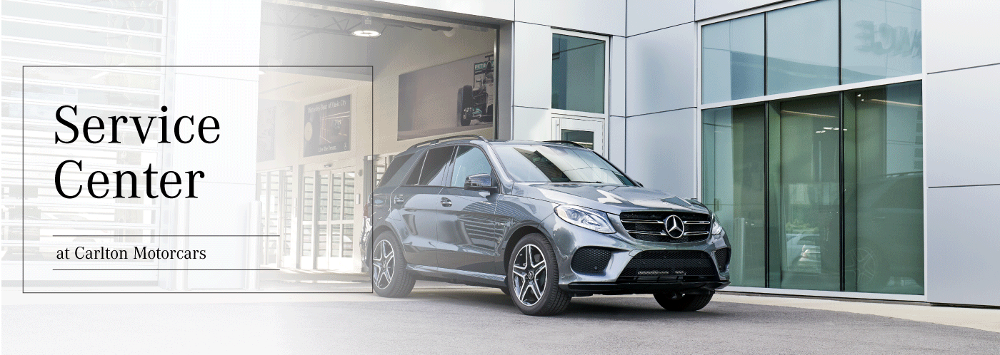

No other companies can compare to the level of service we have here at Mercedes-Benz.
Mercedes-Benz technician carefully inspecting and servicing the brake system, which is one of the most important safety components of a vehicle. The use of proper tools and protective gear highlights the precision and professionalism involved. What makes this especially good is the attention to detail, ensuring that the car performs safely and reliably on the road.
Several vehicles are being worked on at the same time. The organized layout and advanced equipment allow technicians to efficiently handle different types of repairs and maintenance. What makes this especially good is the efficiency and expertise, ensuring that each vehicle receives high quality service without unnecessary delays.

Representing convenience and accessibility for customers. The clean and modern design reflects the professionalism of the brand. What makes this especially good is that it provides a reliable place for owners to maintain their vehicles, helping ensure long term performance and overall driving confidence.